2026 National 5 Biology marking instructions
Source: Scottish Qualifications Authority (SQA) / Qualifications Scotland. This is a StemInteract HTML companion, not an official HTML edition. Selectable text is supplied alongside original page images. Use the images or original PDF for equations, powers, fractions, vector notation, tables and diagrams; text extraction cannot fully preserve mathematical layout.
Jump to a question
PDF page 1
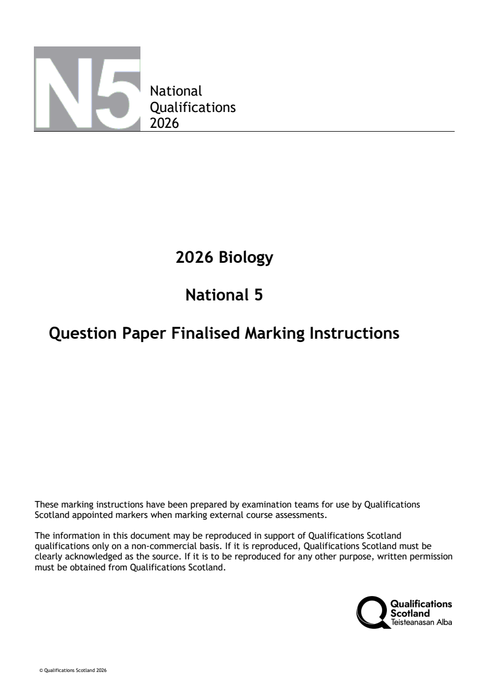
Selectable page text
National
Qualifications
2026
2026 Biology
National 5
Question Paper Finalised Marking Instructions
These marking instructions have been prepared by examination teams for use by Qualifications
Scotland appointed markers when marking external course assessments.
The information in this document may be reproduced in support of Qualifications Scotland
qualifications only on a non-commercial basis. If it is reproduced, Qualifications Scotland must be
clearly acknowledged as the source. If it is to be reproduced for any other purpose, written permission
must be obtained from Qualifications Scotland.
© Qualifications Scotland 2026PDF page 2
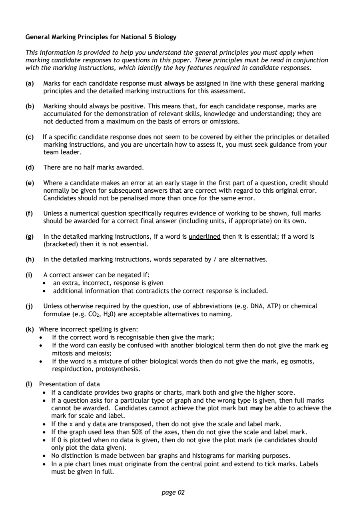
Selectable page text
General Marking Principles for National 5 Biology
This information is provided to help you understand the general principles you must apply when
marking candidate responses to questions in this paper. These principles must be read in conjunction
with the marking instructions, which identify the key features required in candidate responses.
(a) Marks for each candidate response must always be assigned in line with these general marking
principles and the detailed marking instructions for this assessment.
(b) Marking should always be positive. This means that, for each candidate response, marks are
accumulated for the demonstration of relevant skills, knowledge and understanding; they are
not deducted from a maximum on the basis of errors or omissions.
(c) If a specific candidate response does not seem to be covered by either the principles or detailed
marking instructions, and you are uncertain how to assess it, you must seek guidance from your
team leader.
(d) There are no half marks awarded.
(e) Where a candidate makes an error at an early stage in the first part of a question, credit should
normally be given for subsequent answers that are correct with regard to this original error.
Candidates should not be penalised more than once for the same error.
(f) Unless a numerical question specifically requires evidence of working to be shown, full marks
should be awarded for a correct final answer (including units, if appropriate) on its own.
(g) In the detailed marking instructions, if a word is underlined then it is essential; if a word is
(bracketed) then it is not essential.
(h) In the detailed marking instructions, words separated by / are alternatives.
(i) A correct answer can be negated if:
• an extra, incorrect, response is given
• additional information that contradicts the correct response is included.
(j) Unless otherwise required by the question, use of abbreviations (e.g. DNA, ATP) or chemical
formulae (e.g. CO , H 0) are acceptable alternatives to naming.
2 2
(k) Where incorrect spelling is given:
• If the correct word is recognisable then give the mark;
• If the word can easily be confused with another biological term then do not give the mark eg
mitosis and meiosis;
• If the word is a mixture of other biological words then do not give the mark, eg osmotis,
respirduction, protosynthesis.
(l) Presentation of data
• If a candidate provides two graphs or charts, mark both and give the higher score.
• If a question asks for a particular type of graph and the wrong type is given, then full marks
cannot be awarded. Candidates cannot achieve the plot mark but may be able to achieve the
mark for scale and label.
• If the x and y data are transposed, then do not give the scale and label mark.
• If the graph used less than 50% of the axes, then do not give the scale and label mark.
• If 0 is plotted when no data is given, then do not give the plot mark (ie candidates should
only plot the data given).
• No distinction is made between bar graphs and histograms for marking purposes.
• In a pie chart lines must originate from the central point and extend to tick marks. Labels
must be given in full.
page 02PDF page 3
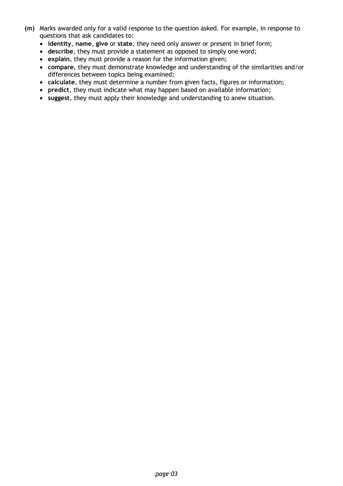
Selectable page text
(m) Marks awarded only for a valid response to the question asked. For example, in response to
questions that ask candidates to:
• identity, name, give or state, they need only answer or present in brief form;
• describe, they must provide a statement as opposed to simply one word;
• explain, they must provide a reason for the information given;
• compare, they must demonstrate knowledge and understanding of the similarities and/or
differences between topics being examined;
• calculate, they must determine a number from given facts, figures or information;
• predict, they must indicate what may happen based on available information;
• suggest, they must apply their knowledge and understanding to anew situation.
page 03PDF page 4
Paper 1, Question 1Paper 1, Question 2Paper 1, Question 3Paper 1, Question 4Paper 1, Question 5Paper 1, Question 6Paper 1, Question 7Paper 1, Question 8Paper 1, Question 9Paper 1, Question 10Paper 1, Question 11Paper 1, Question 12Paper 1, Question 13Paper 1, Question 14Paper 1, Question 15Paper 1, Question 16Paper 1, Question 17Paper 1, Question 18Paper 1, Question 19Paper 1, Question 20Paper 1, Question 21Paper 1, Question 22Paper 1, Question 23Paper 1, Question 24Paper 1, Question 25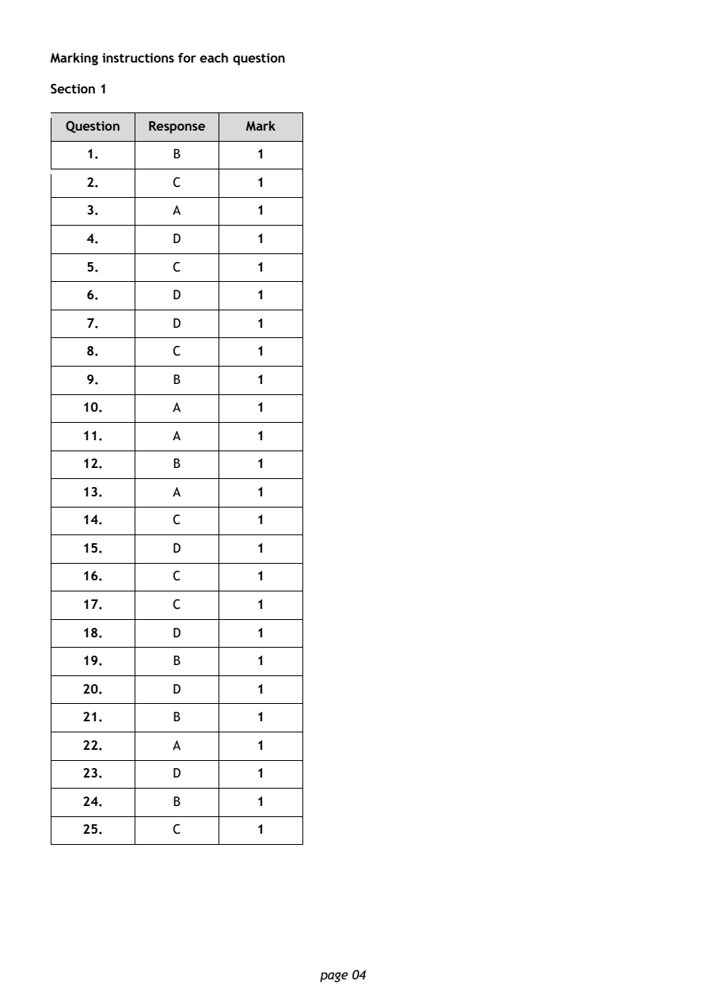
Selectable page text
Marking instructions for each question
Section 1
Question Response Mark
1. B 1
2. C 1
3. A 1
4. D 1
5. C 1
6. D 1
7. D 1
8. C 1
9. B 1
10. A 1
11. A 1
12. B 1
13. A 1
14. C 1
15. D 1
16. C 1
17. C 1
18. D 1
19. B 1
20. D 1
21. B 1
22. A 1
23. D 1
24. B 1
25. C 1
page 04PDF page 5
Paper 2, Question 1Paper 2, Question 2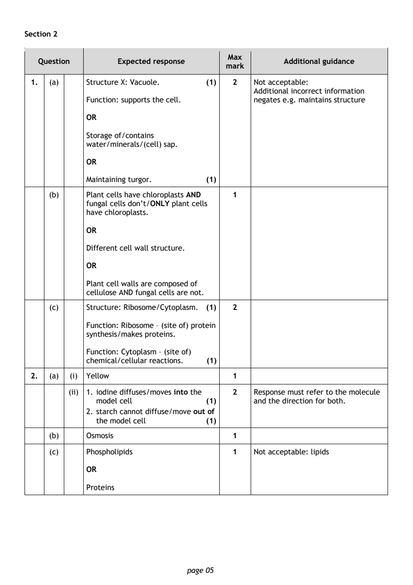
Selectable page text
Section 2
Max
Question Expected response Additional guidance
mark
1. (a) Structure X: Vacuole. (1) 2 Not acceptable:
Additional incorrect information
Function: supports the cell. negates e.g. maintains structure
OR
Storage of/contains
water/minerals/(cell) sap.
OR
Maintaining turgor. (1)
(b) Plant cells have chloroplasts AND 1
fungal cells don’t/ONLY plant cells
have chloroplasts.
OR
Different cell wall structure.
OR
Plant cell walls are composed of
cellulose AND fungal cells are not.
(c) Structure: Ribosome/Cytoplasm. (1) 2
Function: Ribosome – (site of) protein
synthesis/makes proteins.
Function: Cytoplasm – (site of)
chemical/cellular reactions. (1)
2. (a) (i) Yellow 1
(ii) 1. iodine diffuses/moves into the 2 Response must refer to the molecule
model cell (1) and the direction for both.
2. starch cannot diffuse/move out of
the model cell (1)
(b) Osmosis 1
(c) Phospholipids 1 Not acceptable: lipids
OR
Proteins
page 05PDF page 6
Paper 2, Question 3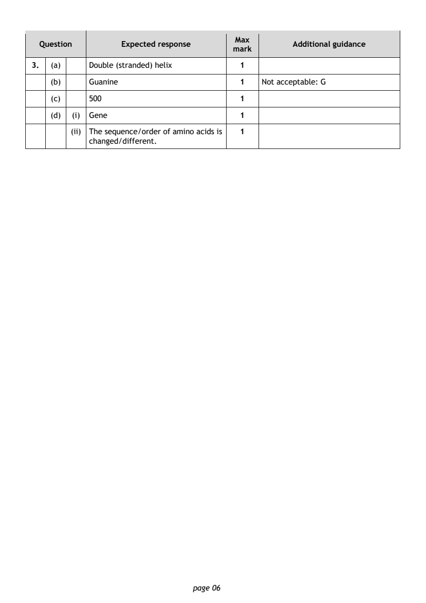
Selectable page text
Max
Question Expected response Additional guidance
mark
3. (a) Double (stranded) helix 1
(b) Guanine 1 Not acceptable: G
(c) 500 1
(d) (i) Gene 1
(ii) The sequence/order of amino acids is 1
changed/different.
page 06PDF page 7
Paper 2, Question 4Paper 2, Question 5Paper 2, Question 6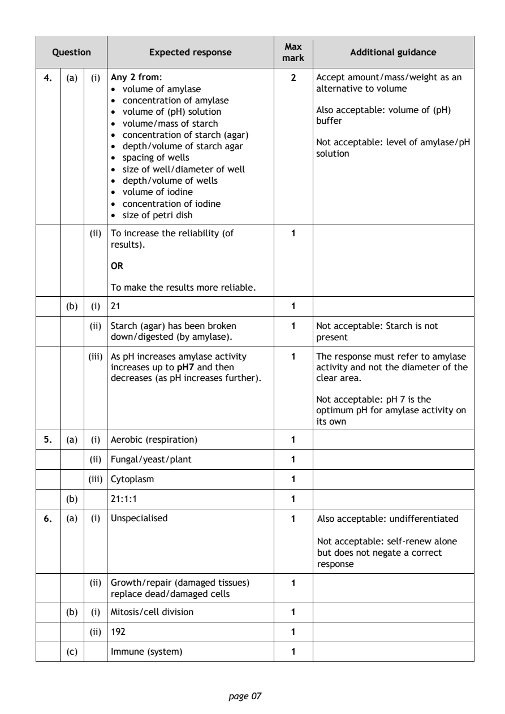
Selectable page text
Max
Question Expected response Additional guidance
mark
4. (a) (i) Any 2 from: 2 Accept amount/mass/weight as an
• volume of amylase alternative to volume
• concentration of amylase
• volume of (pH) solution Also acceptable: volume of (pH)
• volume/mass of starch buffer
• concentration of starch (agar)
Not acceptable: level of amylase/pH
• depth/volume of starch agar
solution
• spacing of wells
• size of well/diameter of well
• depth/volume of wells
• volume of iodine
• concentration of iodine
• size of petri dish
(ii) To increase the reliability (of 1
results).
OR
To make the results more reliable.
(b) (i) 21 1
(ii) Starch (agar) has been broken 1 Not acceptable: Starch is not
down/digested (by amylase). present
(iii) As pH increases amylase activity 1 The response must refer to amylase
increases up to pH7 and then activity and not the diameter of the
decreases (as pH increases further). clear area.
Not acceptable: pH 7 is the
optimum pH for amylase activity on
its own
5. (a) (i) Aerobic (respiration) 1
(ii) Fungal/yeast/plant 1
(iii) Cytoplasm 1
(b) 21:1:1 1
6. (a) (i) Unspecialised 1 Also acceptable: undifferentiated
Not acceptable: self-renew alone
but does not negate a correct
response
(ii) Growth/repair (damaged tissues) 1
replace dead/damaged cells
(b) (i) Mitosis/cell division 1
(ii) 192 1
(c) Immune (system) 1
page 07PDF page 8
Paper 2, Question 7Paper 2, Question 8Paper 2, Question 9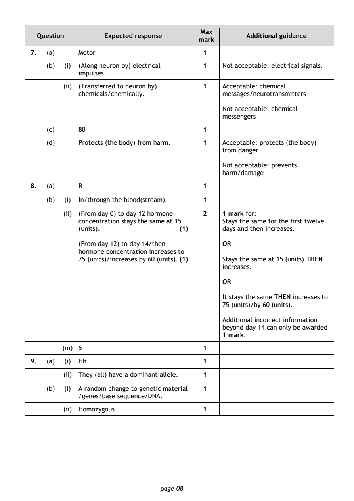
Selectable page text
Max
Question Expected response Additional guidance
mark
7. (a) Motor 1
(b) (i) (Along neuron by) electrical 1 Not acceptable: electrical signals.
impulses.
(ii) (Transferred to neuron by) 1 Acceptable: chemical
chemicals/chemically. messages/neurotransmitters
Not acceptable: chemical
messengers
(c) 80 1
(d) Protects (the body) from harm. 1 Acceptable: protects (the body)
from danger
Not acceptable: prevents
harm/damage
8. (a) R 1
(b) (i) In/through the blood(stream). 1
(ii) (From day 0) to day 12 hormone 2 1 mark for:
concentration stays the same at 15 Stays the same for the first twelve
(units). (1) days and then increases.
(From day 12) to day 14/then OR
hormone concentration increases to
75 (units)/increases by 60 (units). (1) Stays the same at 15 (units) THEN
increases.
OR
It stays the same THEN increases to
75 (units)/by 60 (units).
Additional incorrect information
beyond day 14 can only be awarded
1 mark.
(iii) 5 1
9. (a) (i) Hh 1
(ii) They (all) have a dominant allele. 1
(b) (i) A random change to genetic material 1
/genes/base sequence/DNA.
(ii) Homozygous 1
page 08PDF page 9
Paper 2, Question 10Paper 2, Question 11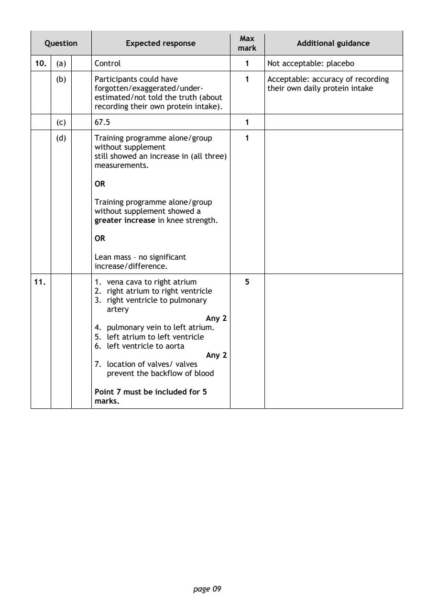
Selectable page text
Max
Question Expected response Additional guidance
mark
10. (a) Control 1 Not acceptable: placebo
(b) Participants could have 1 Acceptable: accuracy of recording
forgotten/exaggerated/under- their own daily protein intake
estimated/not told the truth (about
recording their own protein intake).
(c) 67.5 1
(d) Training programme alone/group 1
without supplement
still showed an increase in (all three)
measurements.
OR
Training programme alone/group
without supplement showed a
greater increase in knee strength.
OR
Lean mass – no significant
increase/difference.
11. 1. vena cava to right atrium 5
2. right atrium to right ventricle
3. right ventricle to pulmonary
artery
Any 2
4. pulmonary vein to left atrium.
5. left atrium to left ventricle
6. left ventricle to aorta
Any 2
7. location of valves/ valves
prevent the backflow of blood
Point 7 must be included for 5
marks.
page 09PDF page 10
Paper 2, Question 12Paper 2, Question 13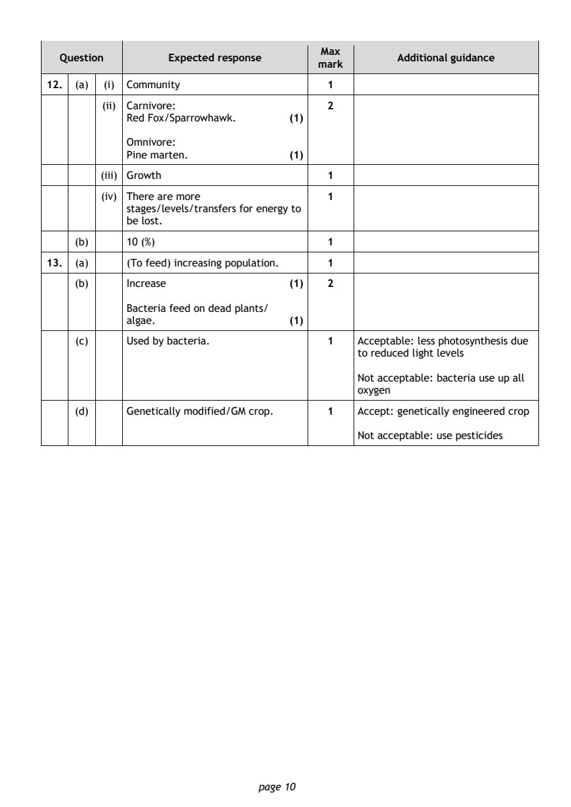
Selectable page text
Max
Question Expected response Additional guidance
mark
12. (a) (i) Community 1
(ii) Carnivore: 2
Red Fox/Sparrowhawk. (1)
Omnivore:
Pine marten. (1)
(iii) Growth 1
(iv) There are more 1
stages/levels/transfers for energy to
be lost.
(b) 10 (%) 1
13. (a) (To feed) increasing population. 1
(b) Increase (1) 2
Bacteria feed on dead plants/
algae. (1)
(c) Used by bacteria. 1 Acceptable: less photosynthesis due
to reduced light levels
Not acceptable: bacteria use up all
oxygen
(d) Genetically modified/GM crop. 1 Accept: genetically engineered crop
Not acceptable: use pesticides
page 10PDF page 11
Paper 2, Question 14Paper 2, Question 15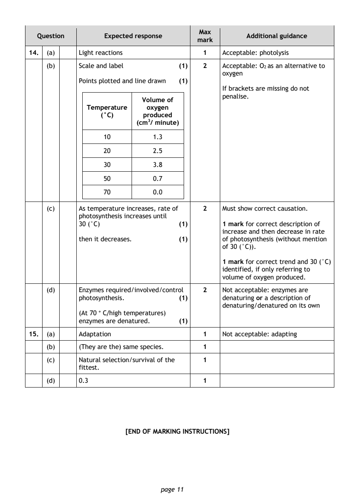
Selectable page text
Max
Question Expected response Additional guidance
mark
14. (a) Light reactions 1 Acceptable: photolysis
(b) Scale and label (1) 2 Acceptable: O as an alternative to
2
oxygen
Points plotted and line drawn (1)
If brackets are missing do not
penalise.
Volume of
Temperature oxygen
(°C) produced
(cm³/ minute)
10 1.3
20 2.5
30 3.8
50 0.7
70 0.0
(c) As temperature increases, rate of 2 Must show correct causation.
photosynthesis increases until
30 (°C) (1) 1 mark for correct description of
increase and then decrease in rate
then it decreases. (1) of photosynthesis (without mention
of 30 (°C)).
1 mark for correct trend and 30 (°C)
identified, if only referring to
volume of oxygen produced.
(d) Enzymes required/involved/control 2 Not acceptable: enzymes are
photosynthesis. (1) denaturing or a description of
denaturing/denatured on its own
(At 70 ° C/high temperatures)
enzymes are denatured. (1)
15. (a) Adaptation 1 Not acceptable: adapting
(b) (They are the) same species. 1
(c) Natural selection/survival of the 1
fittest.
(d) 0.3 1
[END OF MARKING INSTRUCTIONS]
page 11